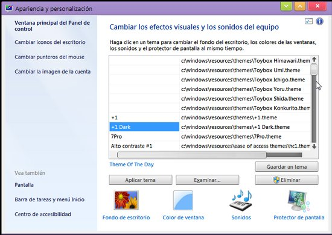
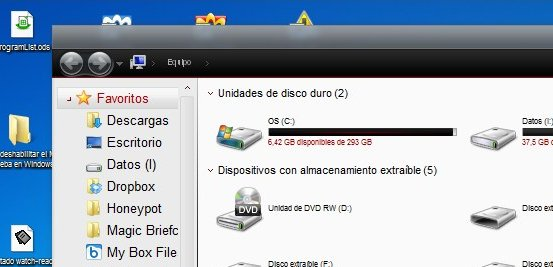
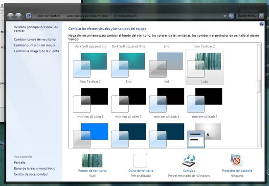
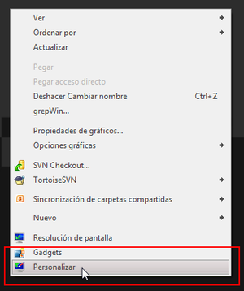

Windows 7: Themes personalizados y Aero Glass
Tenés Windows 7 Home Basic (o similar), seguro que te aburriste del theme/tema baby blue que trae por defecto que no se puede cambiar. No esperes más y cambialo ya.
Themes personalizados
- Desactivar el UAC: (Panel de Control > Cambiar Configuración de Control del Usuario. O buscar UAC en la cajita de búsqueda del menú inicio o panel de control). Lo que hay que hacer es desactivarlo o ponerlo en la segunda barrita (contando desde abajo).
- Instalar el UxStyle Core[^1]: Leer los Términos de Servicio y si se está de acuerdo, siguiente. Si no se está de acuerdo, igual.
- Opcional: Poner la configuración de UAC como se tenia anteriormente
- Descargar e instalar los temas. Éstos van en
C:\Windows\Resources\Themes - Cambiarlos en
Panel de Control\>Cambiar Combinación de coloresy elegir el que más te guste. Acá hay un problemita, capaz que es mío, los themes tienen el mismo nombre (Windows 7 Standard/Basic) asi que no queda otra que ir clickeando y ver como queda en la muestra :)
Fuente: Seven forums: enabling custom themes
[1]: Existen parches, pero todos saben que es un 50% de que anden/no pase
nada y 50% de que se arruine algo y tener que, a veces, reinstalar el sistema operativo. Este programita es
un servicio (lo pueden encontrar en el Administrador de
tareas > servicios, se llama UnsignedThemes.exe) que ocupa un poquito de
memoria y "es un poco más seguro" (para el sistema) que los parches. El
proceso "engaña" a Windows en pensar que todos los temas estan firmados
y asi poder usar los personalizados.
Mejor theme manager
Como viene con Windows 7 Home Basic (yendo por Panel de Control > Cambiar Combinación de colores):

Al instalar themes, te repite el nombre "Windows 7 Standard/Basic" varias veces. Instalando Personalization Panel (como administrador) tenes un mejor theme manager:

Ademas de que:
- Podes cambiar el wallpaper en Windows 7 Starter
- Te deja cambiar el color de las ventanas en Windows 7 Home Basic
- Tiene asociaciones de archivos
\*.theme,\*.msstylesy\*.themepack. Basicamente permite hacer doble click sobre el theme y te salta el programa para que eligas. - Dependiendo del theme, podes tener cierta transparencia:

Aero (Transparencias y mas)
Siempre y cuando tu compu lo permita, podes activar el Aero instalando el Aero Patch. Esto te da:
- Aero Glass y coloración
- soporte full de themes incluyendo RSS y Slideshow
- Aero peak, shake y WinFlip 3D (y los efectitos cuando minimizas la ventana)
- Soporte de themes de terceros (con lo que parece no necesitar el UxStyle Core, but you tell me)
- El theme manager de los "Windows 7 polenta":

e incluso te da la opción en el menú contextual, que antes no estaba:

Instalas normalmente (como administrador) y se aplica el patch. No tiene forma grafica de avisarte que terminó (teoricamente se reinicia el sistema solo), asique esperá unos segundos (como 10, o cuando parece que no esta procesando nada) y reiniciá (REINICIÁ, no cierres y entres de nuevo a la sesión, que no funciona). Para desinstalar, volves a correr el patch.
Transparencia "full":

También podes usar totalmente opaco:

+1 Dark
O miti y miti:

mini'em all alien 1